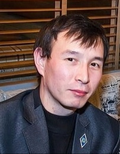

|

|
Дата рождения:13.01.1983г.
Семейное положение:холост
Национальность:казах
Гражданство:Республика Казахстан
2010-2014 Каспийский Общественный Университет
Факультет:"Финансы"
Специальность:"Финансист"
Казахский - хорошо
Русский - отлично
Английский - начальный
Microsoft Office: Word,Excel,CorelDraw,Photoshop,HTML,CSS,JS,TypeScript,Figma
2014 - на данный момент охранник ТОО АО "Титан"
2013 - 2014 оператор-копирайтер ТОО "Копицентр"
2013 - 2013 помощник бухгалтера ТОО "Bona Group"
2012 - 2013 менеджер по продажам ТОО "Sky Stone"
2006 - 2012 ресепшн ТОО Hotel "Tien Shan"
2003 - 2006 администратор "Пиццерия Венеция-2"
Трудолюбивый,пунктуальный,ответственный,внимательный,наблюдательный,
интересуюсь новым опытом,способность быстро обучатся и знать на практике,
отношусь к работе серьезно,прилежный и честный
Чтение,рок-музыка,спорт,общение с людьми,путешествие
Получить долгосрочную работу и повысить квалификацию